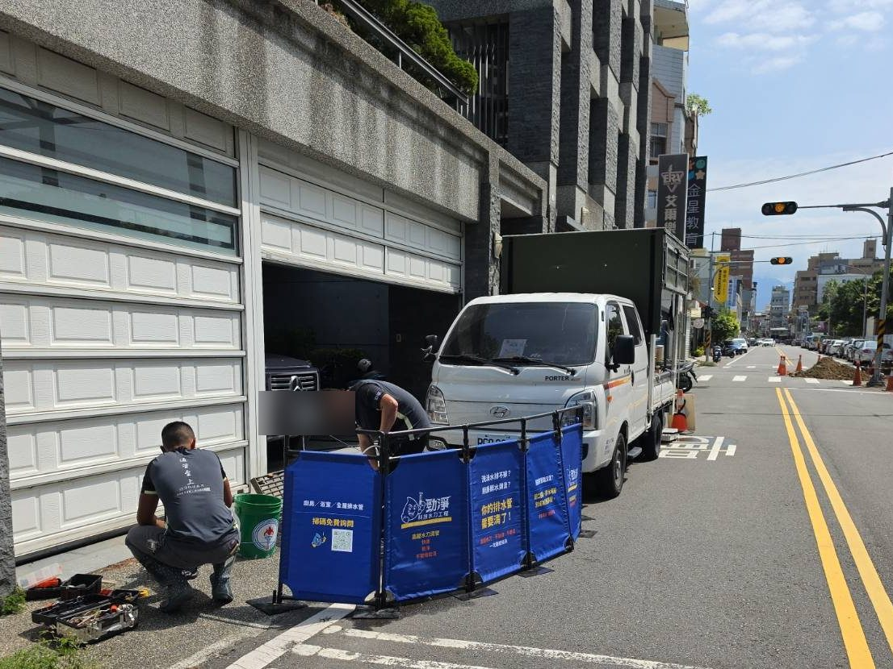
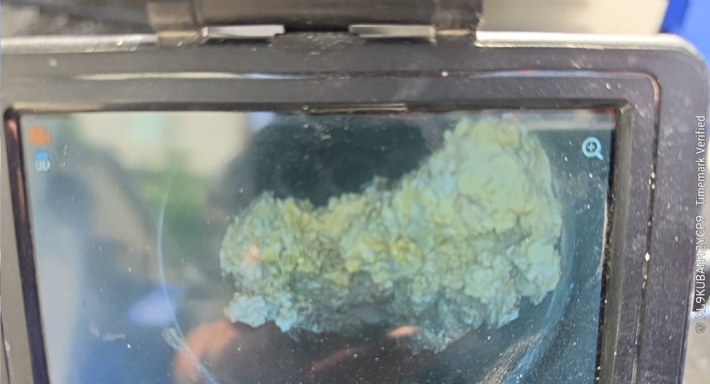
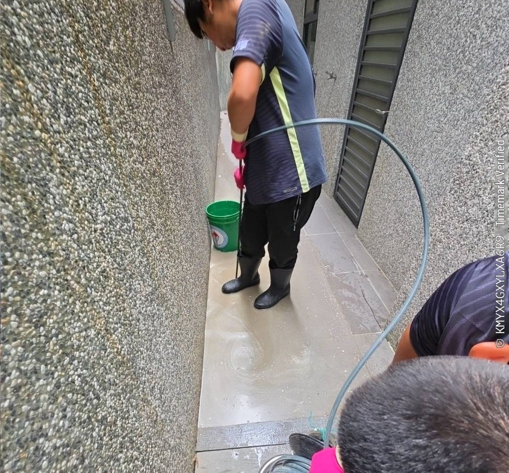
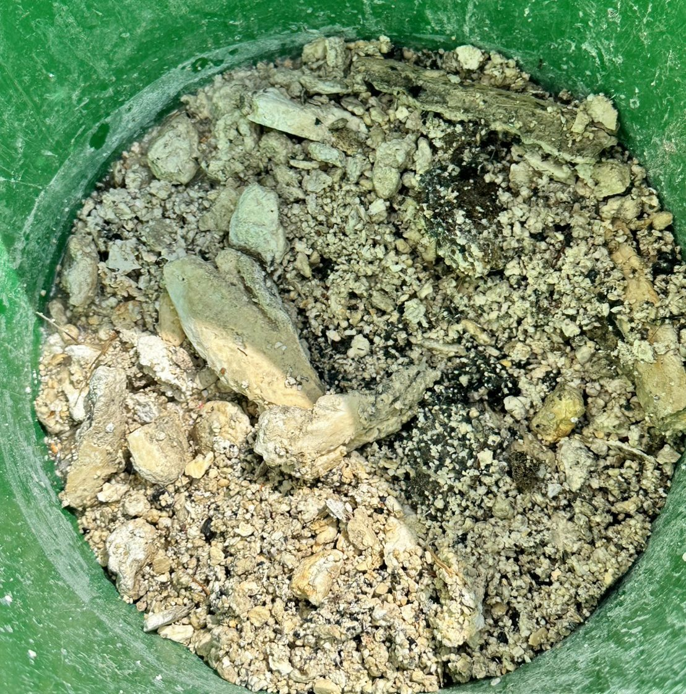
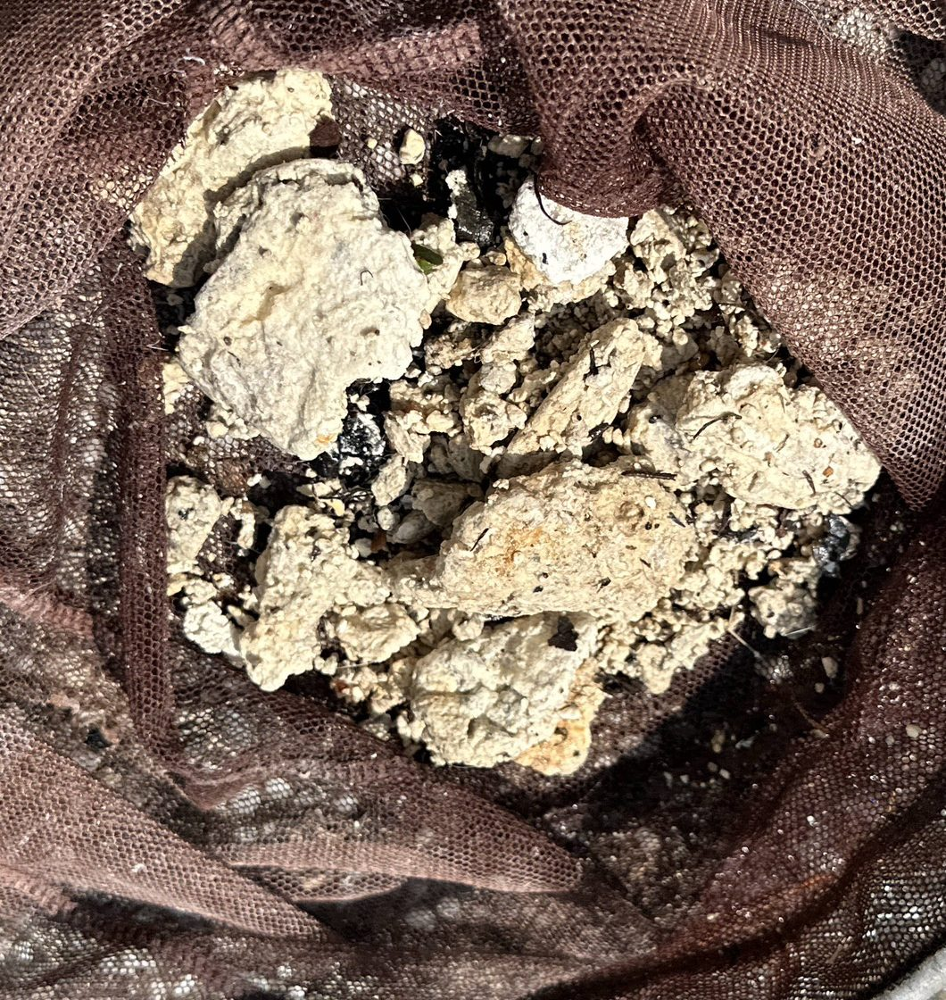

多半是管壁上的積料越積越厚，通條打通了，過一陣子又會塞
洗澡積水、洗衣機排水時陽台淹水，表示管內已經變窄。
皂垢、油脂、毛髮長期卡在管壁，發酵後產生異味。
樓上用水時樓下地排咕嚕作響，甚至往上冒水。
新屋施工殘留的砂漿、老屋累積的皂垢，平常看不到卻一直在。
先診斷再清洗，不亂收費、不亂挖
拍下排水孔位置、說明狀況，我們先初步評估並約時間。
到府用內視鏡進管，找出阻塞位置和積料狀況，現場說明。
從排水孔進管，360° 沖刷管壁，砂漿、皂垢、油脂一起清出。
完工放水測試排水速度，清洗前後影像整理給您留存。
價格透明，到場前先說清楚
※ 管內有水泥塊、異物卡死或需特殊處理者，現場評估後另行報價
※ 服務範圍：苗栗（主）、新竹、台中，遠程地區請先來電確認
同樣是清管，差別比你想像的大
| 傳統通條 | 🚀 勁淨高壓水刀 | |
|---|---|---|
| 清潔方式 | 機械穿刺，只打通中心孔 | 高壓水流 360° 沖刷管壁 |
| 管壁積料 | ❌ 管壁積料殘留，容易再塞 | ✅ 管壁徹底清潔，延長暢通期 |
| 適用阻塞 | 一般軟性阻塞 | 砂石、水泥塊、油脂各類阻塞 |
| 影像記錄 | ❌ 無法提供證明 | ✅ 施工前後全程影像 |
※ 通條適合應急打通；水刀是真正的徹底清潔
真實案場記錄，讓成果說話





廚房外排水、後院排水管積滿皂垢與砂石，排水不順。內視鏡確認阻塞位置後逐段水刀清洗，清出整桶水泥塊及砂石。
清管完工後提供書面保固卡，有問題直接聯繫，免費到府檢查
不需要。水刀管是從現有的排水孔放進去清洗，不用破壞地板、牆面。
清出的積料會用桶子、濾網收集，完工後集中放到指定位置，現場收拾乾淨再離開。
基本出車 8,000 元含清洗 1 管，多洗一管加 2,500 元。到場用內視鏡看管後，會先跟您說明要洗哪幾管、總共多少錢，您同意了才開始施工。
每個家庭用水習慣不同。如果出現排水變慢、反臭，或是屋齡久從沒清過，就建議先請我們用內視鏡看一次管，確認狀況再決定。
電話或 LINE 詢問，免費評估

掃描加入 LINE
快速詢價